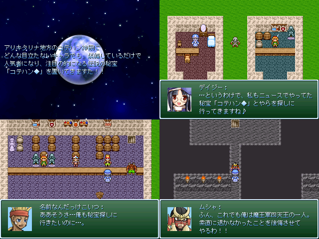

（豆）＜コテかぁ・・おれもなってみたいぜ
・ハンドルネーム：巫女になりたかった ・間に合うか度：6.9 ・意気込み：初参加です。 多分、濃くて面白い作品達が来ると思うので それらに埋もれないようにエターなりたいと思います。 ・ゲームタイトル：コテハンクエストIII ～そして伝説へ～ ・ゲームの簡単な説明：コテハンがプレイするとがっかりすること間違いなしで す ゲームは、 いい話を作ろうとしたらエターなったので下半身に全部作らせました